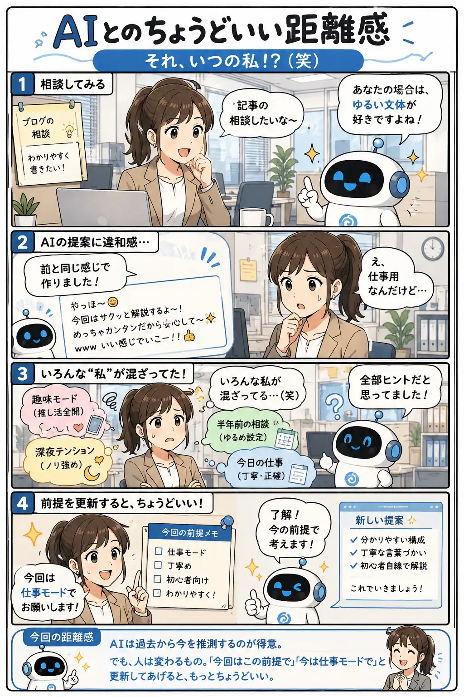

#051
それ、いつの私！？（笑）
覚えてくれるのは嬉しい。でも、私も日々アップデート中です。

メモ
AIは会話の流れや過去の情報をヒントにして、より自分らしい提案をしようとします。
その一方で、人の好みや状況は意外と変わるもの。昔の設定や一度だけのノリが、今の前提として扱われると少し不思議な気持ちになります。
「今回は仕事モードで」「今日は初心者向けに」など、現在の前提をひと言添えるだけで、AIとの会話はぐっと自然になります。
今回の距離感
AIは過去から今を推測するのが得意。でも、人は変わるもの。「今回はこの前提で」「今は仕事モードで」と更新してあげると、もっとちょうどいい。